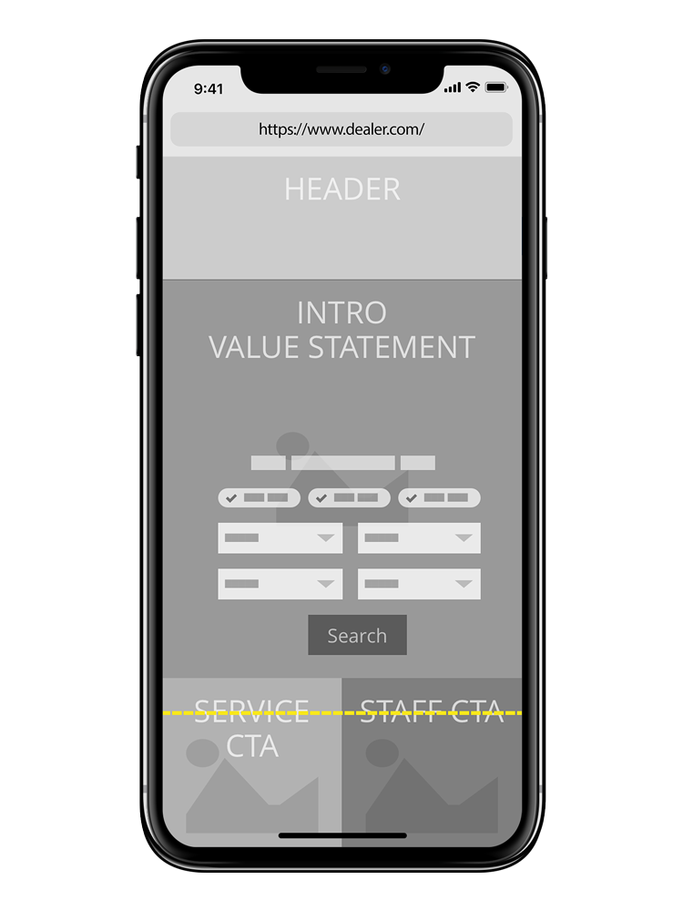

Revised Automotive Dealer Home Pages
What happens when you get a clean sheet to overhaul the first touchpoint of the site? Well, you don't always get what you want, but you do get to meaningfully move the needle on overall design, organization and set things up for the future.
The starting point
Most years we bring a new design to the national dealership trade show to show off improvements and attract new customers. Below is an example of what we had done in the past (this was not a project I was closely involved in). It has some significant shortcomings.
- The lead image was forced to be overlain with a dark or light color to allow the text to be read
- TIt was chocker block full of images but lacked definition
- TThe text at the bottom, while primarily used for SEO purposes was often out of control and nearly impossible to read
Initial Concepts
This was absolutely the most exciting part of the process. A clean sheet of paper (often literally) to craft some ideas for a variety of home page options for dealerships. The basic approach was to make sure users could do three things:
- Get an overall sense of the dealership through strong imagery
- Reinforce the dealer's name and value statement
- Quickly allow users to search the dealer's inventory
Restrictions
As with any real-world solution, I had to manage a range of limitations. We had minimal capability in selecting imagery, basically giving dealers some stock defaults and guidelines, but ultimately they would need to select imagery. And when imagery is the focus, this can be a challenge. As part of the web platform team, we can not work with each of the thousands of rooftops, nor even the hundreds of colleagues who do work with them.
Surprise
We came up with three initial solutions as a team. I thought our updated "hero" layout with a single big image, large typography, and an overlain search box would be the clear winner for both dealers and consumers. It was, after all, just some small improvements to a proven design. A second design we tried initially was a more "collage" based layout. It failed pretty miserably on initial user testing. Users were confused, but it was a layout that had been requested frequently, so I took one more try at it. The original layout had every element of the collage butted up against the other, so I added a simple margin between each, and that changed the perception greatly. Now, it is the most used layout, and works great for dealers and users.
Timeline
I often get asked what the timeline looks like for a project like this, and—importantly—how I am involved with each stage. Note that while we work with Agile teams, our process is a mix of Agile and waterfall, and with big projects we are usually 1-2 quarters ahead of the development team.
-
Kickoff
Initial information and requirement gathering. Wireframing, Paper Sketches
-
Early Mockups
Take wireframes and bring in real world imagery, design system, rough in layout. Digital Sketches
-
Internal Feedback
Get early internal reaction, make updates and refinement, get ready for user testing. Critique, User Testing Setup, Advanced Prototyping
-
User Testing
Utilize usertesting.com to gather initial feedback, make updates as needed. User Testing Analysis
-
Refinement and Sizing
Utilize internal resources and teams to vet ideas, get engineering to size. Meetings and Consulting
-
Finalize Designs
Refine mockups, work as a team to make sure everything is dialed in. Digital Sketches
-
Development Support
Work daily with development team, answering questions, updating mockups as needed. Consulting, Grooming
-
Launch and Test
As the project is being launched check for any outstanding questions we might have for user testing. AB test writing, User Testing setup